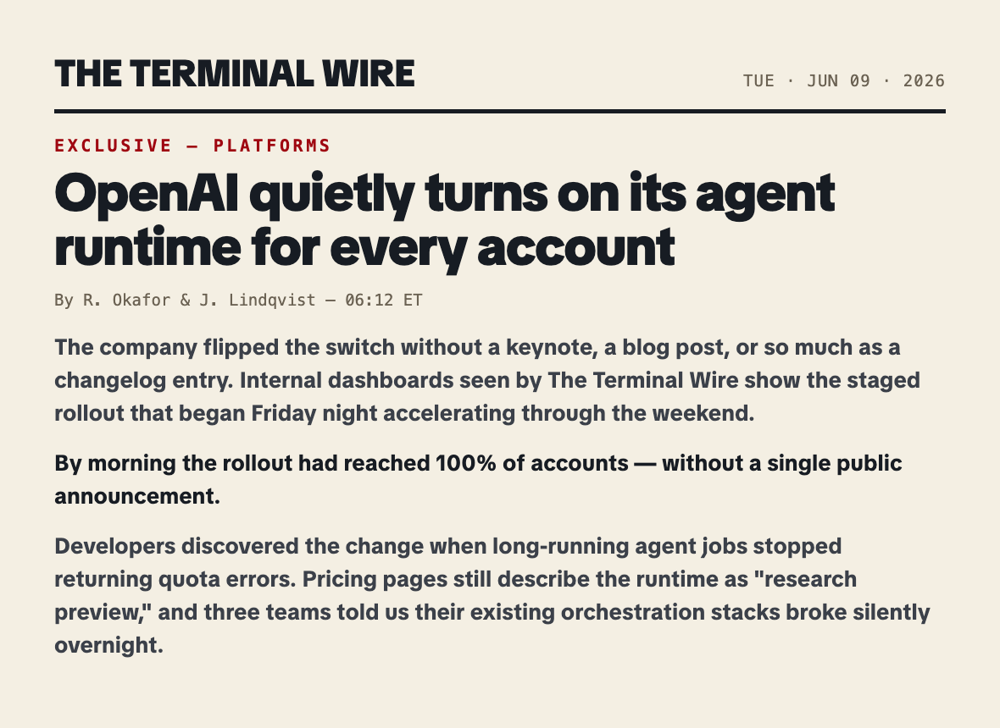

<!doctype html>
<!-- ABN PRESS-TEAR — newsroom-wall press-clipping breakdown. 16:9 seekable composition.
     Contract: window.duration + window.seek(t). Every visual state is pure f(t).
     No CSS animations, no wall clock, no runtime randomness. Brand atoms per
     yt-pipeline/remotion/DESIGN.md (+ the allowed paper tone #F2E9D8 and warningGold marker).

     ══════════════════ PARAMETRIZATION (replace these) ══════════════════
     
                   — swap src to any screenshot/press image (keep ~4:3-ish; it scales to width).
                     Default art is generated from placeholder-source.html (see that file).
     P.highlights  — marker-sweep bands, in % of the clip image box: {x,y,w,h} each.
                     Aim them at the quoted line(s) in YOUR screenshot.
     P.circle      — grease-pencil circle target, % of clip image box: {x,y,rx,ry}.
     P.kicker      — mono desk line, top of the quote column.
     P.pull1/2/3   — pull-quote lines. pull2 is the BIG red one. Keep pull3 ≤ 17 chars.
     P.stampText   — red rubber stamp text, e.g. "CONFIRMED LIVE".
     P.source      — mono source chip under the quote.
     window.duration — 12s; beats in TL.
     ════════════════════════════════════════════════════════════════════ -->
<html lang="en">
<head>
<meta charset="utf-8" />
<style>
  @font-face { font-family: "ABN Display"; src: url("fonts/TikTokSans36pt-Black.ttf"); font-weight: 900; }
  @font-face { font-family: "ABN Text"; src: url("fonts/TikTokSans16pt-Bold.ttf"); font-weight: 700; }
  :root {
    --void:#030405; --stage:#080B0F; --panel:#0D1117;
    --red:#FF2B2F; --red-dark:#9F0711; --cyan:#7FD2FF; --blue:#16A7FF;
    --white:#F4F7FB; --mid:#8F99A7; --ink:#CBD7E1; --gold:#FFCD38; --paper:#F2E9D8;
  }
  * { margin:0; padding:0; box-sizing:border-box; }
  html, body { width:1920px; height:1080px; overflow:hidden; background:var(--stage); }
  body { font-family:"ABN Display","Arial Black",sans-serif; color:var(--white); position:relative; }
  #stage { position:absolute; inset:0; }

  /* ── the wall ── */
  #wallglow { position:absolute; inset:-120px;
    background:
      radial-gradient(760px 600px at 4% -6%,  rgba(159,7,17,0.20), transparent 70%),
      radial-gradient(640px 520px at 100% 110%, rgba(22,167,255,0.10), transparent 70%); }
  #wallgrid { position:absolute; inset:0; opacity:0.55;
    background:
      repeating-linear-gradient(0deg,  rgba(143,153,167,0.045) 0 1px, transparent 1px 120px),
      repeating-linear-gradient(90deg, rgba(143,153,167,0.045) 0 1px, transparent 1px 120px); }
  .ghostclip { position:absolute; background:var(--panel); opacity:0.65;
    clip-path:polygon(2% 0%, 98% 1.4%, 100% 96%, 96% 100%, 1% 98.4%, 0% 3%); }
  #ghost1 { left:-60px; top:640px; width:520px; height:380px; transform:rotate(6deg); }
  #ghost2 { left:760px; top:-90px; width:430px; height:300px; transform:rotate(-7deg); }
  #noise { position:absolute; inset:0; opacity:0.09; mix-blend-mode:overlay; z-index:9;
    background-image:url("data:image/svg+xml;utf8,<svg xmlns='http://www.w3.org/2000/svg' width='280' height='280'><filter id='n'><feTurbulence type='fractalNoise' baseFrequency='0.9' numOctaves='2' stitchTiles='stitch'/></filter><rect width='100%25' height='100%25' filter='url(%23n)'/></svg>"); }
  #vignette { position:absolute; inset:0; pointer-events:none; z-index:10;
    background:radial-gradient(ellipse at center, rgba(0,0,0,0) 40%, rgba(0,0,0,0.32) 100%); }

  /* ── torn clipping (filter on wrap so the shadow survives the clip-path) ── */
  #clipWrap { position:absolute; left:110px; top:118px; width:912px; z-index:3;
    filter:drop-shadow(20px 30px 34px rgba(0,0,0,0.66)); }
  #clipMat { background:var(--paper); padding:26px 26px 60px; position:relative;
    clip-path:polygon(0% 1.8%, 4% 0.2%, 11% 1.6%, 19% 0%, 28% 2%, 38% 0.4%, 49% 2.2%,
      60% 0.2%, 70% 1.8%, 81% 0%, 91% 2%, 100% 0.6%, 99.3% 10%, 100% 21%, 98.6% 32%,
      100% 44%, 99% 56%, 100% 67%, 98.4% 79%, 100% 90%, 99.2% 100%, 89% 98.6%, 78% 100%,
      66% 98.2%, 53% 100%, 40% 98.8%, 27% 100%, 15% 98.4%, 5% 100%, 0% 98%, 1.2% 88%,
      0% 76%, 1.6% 64%, 0.2% 51%, 1.4% 39%, 0% 27%, 1.5% 14%); }
  #clipBox { position:relative; }
  #clip { display:block; width:100%; height:auto; }
  /* marker sweeps — rough-edged gold bars, multiply over the paper */
  .sweep { position:absolute; background:var(--gold); mix-blend-mode:multiply; opacity:0.78;
    transform-origin:left center;
    clip-path:polygon(0% 18%, 3% 4%, 11% 12%, 22% 2%, 34% 14%, 47% 4%, 59% 12%, 71% 2%,
      83% 12%, 93% 4%, 100% 14%, 99% 52%, 100% 84%, 92% 96%, 80% 88%, 67% 98%, 54% 88%,
      41% 98%, 28% 88%, 15% 98%, 4% 90%, 0% 78%); }
  /* grease-pencil circle */
  #grease { position:absolute; overflow:visible; }
  #grease path { fill:none; stroke:var(--red); stroke-width:9; stroke-linecap:round; opacity:0.82; }
  .tape { position:absolute; width:170px; height:46px; background:rgba(242,233,216,0.30);
    box-shadow:inset 0 0 0 1px rgba(244,247,251,0.10); z-index:4; }
  #tapeL { left:-44px; top:-16px; transform:rotate(-38deg); }
  #tapeR { right:-48px; top:-12px; transform:rotate(34deg); }

  /* ── quote column ── */
  #kicker { position:absolute; left:1062px; top:142px; z-index:5;
    font-family:"SF Mono",Menlo,monospace; font-size:25px; font-weight:700;
    letter-spacing:0.10em; color:var(--red); }
  .pull { position:absolute; left:1062px; white-space:nowrap; letter-spacing:-0.03em; z-index:5; }
  #pull1 { top:222px; font-size:86px; }
  #pull2 { top:322px; font-size:126px; color:var(--red); }
  #pull3 { top:496px; font-size:78px; color:var(--ink); }
  .pull .shadowpass { position:absolute; left:0; top:0; color:transparent; z-index:-1;
    -webkit-text-stroke:2px rgba(127,210,255,0.30); }
  #srcChip { position:absolute; left:1062px; top:646px; z-index:5; background:var(--panel);
    border:1px solid rgba(127,210,255,0.25); padding:14px 22px;
    font-family:"SF Mono",Menlo,monospace; font-size:24px; font-weight:700;
    letter-spacing:0.06em; color:var(--cyan); }
  /* giant outlined ghost behind the quote column — fills the lower-right at frame 0 */
  #bigGhost { position:absolute; left:1014px; top:678px; z-index:1; font-size:310px;
    letter-spacing:-0.03em; color:transparent; white-space:nowrap;
    -webkit-text-stroke:3px rgba(244,247,251,0.075); }
  #wallTag { position:absolute; left:132px; bottom:126px; z-index:5;
    font-family:"SF Mono",Menlo,monospace; font-size:22px; font-weight:400;
    letter-spacing:0.08em; color:var(--mid); opacity:0.6; }

  /* red string + pins */
  #string { position:absolute; inset:0; overflow:visible; z-index:4; }
  #string path { fill:none; stroke:var(--red); stroke-width:5; stroke-linecap:round; opacity:0.9; }
  #string circle { fill:var(--red); }

  /* rubber stamp */
  #stamp { position:absolute; left:1150px; top:806px; z-index:6; color:var(--red);
    border:7px solid var(--red); padding:14px 30px 16px; font-size:64px; letter-spacing:0.01em;
    white-space:nowrap;
    -webkit-mask-image:url("data:image/svg+xml;utf8,<svg xmlns='http://www.w3.org/2000/svg' width='300' height='300'><filter id='n'><feTurbulence type='fractalNoise' baseFrequency='0.55' numOctaves='3' stitchTiles='stitch'/></filter><rect width='100%25' height='100%25' filter='url(%23n)' opacity='0.92'/><rect width='100%25' height='100%25' fill='white' opacity='0.55'/></svg>");
    -webkit-mask-size:300px 300px; }
</style>
</head>
<body>
<div id="stage">
  <div id="wallglow"></div>
  <div id="wallgrid"></div>
  <div class="ghostclip" id="ghost1"></div>
  <div class="ghostclip" id="ghost2"></div>

  <div id="clipWrap"><div id="clipMat">
    <div id="clipBox">
      
      <!-- sweeps + grease circle injected/positioned from P -->
      <svg id="grease" viewBox="0 0 400 160" preserveAspectRatio="none">
        <path pathLength="100" d="M203,16 C322,6 392,46 386,86 C380,130 286,154 192,148
          C96,142 14,114 14,74 C14,36 100,12 234,10 C318,9 374,30 380,62"/>
      </svg>
    </div>
    <div class="tape" id="tapeL"></div>
    <div class="tape" id="tapeR"></div>
  </div></div>

  <div id="bigGhost"></div>
  <div id="wallTag"></div>
  <div id="kicker"></div>
  <div class="pull" id="pull1"><span class="shadowpass"></span><span class="mainpass"></span></div>
  <div class="pull" id="pull2"><span class="shadowpass"></span><span class="mainpass"></span></div>
  <div class="pull" id="pull3"><span class="shadowpass"></span><span class="mainpass"></span></div>
  <div id="srcChip"></div>

  <svg id="string">
    <path id="stringPath" pathLength="100" d="M790,520 C900,564 980,430 1062,302"/>
    <circle id="pinA" cx="790" cy="520" r="11"/>
    <circle id="pinB" cx="1062" cy="302" r="11"/>
  </svg>

  <div id="stamp"></div>
</div>
<div id="noise"></div>
<div id="vignette"></div>

<script>
  // ═══════ PARAMS — replace these ═══════
  const P = {
    kicker: "PRESS CLIP — ABN DESK · 06.09",
    pull1: "SHIPPED TO 100%.",
    pull2: "OVERNIGHT.",
    pull3: "NO ANNOUNCEMENT.",
    stampText: "CONFIRMED LIVE",
    source: "SRC: theterminalwire.com — 2026-06-09",
    ghost: "100%",                       // giant outlined ghost behind the quote column
    wallTag: "WALL 04 — RUNTIME WATCH",  // mono micro-label, bottom-left
    // marker bands + circle target, % of the clip image box — aim at YOUR quote line
    highlights: [ { x: 4.6, y: 60.6, w: 87, h: 6.6 }, { x: 4.6, y: 66.6, w: 23, h: 5.4 } ],
    circle: { x: 54.6, y: 64.0, rx: 13.5, ry: 5.6 },
  };
  window.duration = 12;

  // ═══════ timeline (s) — clip + first pull line back-dated so FRAME 0 is composed ═══════
  const TL = {
    clip: -0.55, kicker: -0.30, pulls: [-0.30, 0.55, 1.10],
    sweeps: [[1.9, 1.15], [3.25, 0.55]],
    grease: [4.3, 1.5],
    string: [6.3, 1.0],
    chip: 2.3, stamp: 8.6,
  };

  const $ = (id) => document.getElementById(id);
  const clamp = (v,a=0,b=1) => Math.max(a, Math.min(b, v));
  const seg = (t,s,d) => clamp((t-s)/d);
  const eoc = (p) => 1 - Math.pow(1-p, 3);
  const backOut = (p,c=1.5) => 1 + (c+1)*Math.pow(p-1,3) + c*Math.pow(p-1,2);

  // populate copy + aim the overlays
  $("kicker").textContent = P.kicker;
  ["pull1","pull2","pull3"].forEach((id, i) => {
    const el = $(id), s = P["pull" + (i + 1)];
    el.querySelector(".mainpass").textContent = s;
    el.querySelector(".shadowpass").textContent = s;
  });
  $("srcChip").textContent = P.source;
  $("stamp").textContent = P.stampText;
  $("bigGhost").textContent = P.ghost;
  $("wallTag").textContent = P.wallTag;
  const sweeps = P.highlights.map((h) => {
    const d = document.createElement("div");
    d.className = "sweep";
    d.style.left = h.x + "%"; d.style.top = h.y + "%";
    d.style.width = h.w + "%"; d.style.height = h.h + "%";
    $("clipBox").appendChild(d);
    return d;
  });
  const g = $("grease"), C = P.circle;
  g.style.left = (C.x - C.rx) + "%"; g.style.top = (C.y - C.ry) + "%";
  g.style.width = (C.rx * 2) + "%"; g.style.height = (C.ry * 2) + "%";

  function drawPath(el, p) {
    el.style.strokeDasharray = 100;
    el.style.strokeDashoffset = 100 * (1 - clamp(p));
    el.style.opacity = p <= 0 ? 0 : "";
  }

  window.seek = function seek(t) {
    t = clamp(t, 0, window.duration);

    // slow newsroom push-in — the wall is alive
    $("stage").style.transformOrigin = "56% 44%";

    // clipping drops onto the wall, settles into its rotation
    const cp = seg(t, TL.clip, 0.55);
    const cw = $("clipWrap");
    cw.style.opacity = clamp(cp * 4);
    cw.style.transform = `rotate(${-2.2 + (1 - eoc(cp)) * -5}deg)
      scale(${cp <= 0 ? 1.3 : 1.24 + (1 - 1.24) * backOut(cp)})
      translateY(${(1 - eoc(cp)) * -70 + Math.sin(t * 0.8) * 3}px)`;

    // kicker + pull-quote slams (scale overshoot, rotation kick, cyan ghost pass behind)
    const kp = seg(t, TL.kicker, 0.4);
    $("kicker").style.opacity = clamp(kp * 4);
    $("kicker").style.transform = `translateX(${(1 - eoc(kp)) * 60}px)`;
    [["pull1", -1.0, 7], ["pull2", -1.8, -8], ["pull3", 0.8, 6]].forEach(([id, rot, kick], i) => {
      const p = seg(t, TL.pulls[i], 0.38);
      const el = $(id);
      el.style.opacity = clamp(p * 5);
      el.style.transform = `rotate(${rot + (1 - eoc(p)) * kick + Math.sin(t * 1.6 + i * 2.1) * 0.25}deg)
        scale(${p <= 0 ? 2.3 : 2.1 + (1 - 2.1) * backOut(p)})`;
      const gx = 4 + Math.sin(t * 7.9 + i) * 2;
      el.querySelector(".shadowpass").style.transform = `translate(${-gx}px, ${gx * 0.8}px)`;
    });

    // marker sweeps left→right across the quoted line(s)
    sweeps.forEach((d, i) => {
      const sp = eoc(seg(t, TL.sweeps[i][0], TL.sweeps[i][1]));
      d.style.transform = `scaleX(${sp})`;
      d.style.opacity = sp <= 0 ? 0 : "";
    });

    // grease-pencil circle around the key claim
    drawPath(g.querySelector("path"), seg(t, TL.grease[0], TL.grease[1]));

    // red string: claim → pull-quote, pins pop at each end
    drawPath($("stringPath"), seg(t, TL.string[0], TL.string[1]));
    const pa = seg(t, TL.string[0] - 0.15, 0.3), pb = seg(t, TL.string[0] + TL.string[1], 0.3);
    $("pinA").style.opacity = pa; $("pinA").style.transform = `scale(${backOut(pa)})`;
    $("pinA").style.transformOrigin = "790px 520px";
    $("pinB").style.opacity = pb; $("pinB").style.transform = `scale(${backOut(pb)})`;
    $("pinB").style.transformOrigin = "1062px 302px";

    // source chip
    const chp = seg(t, TL.chip, 0.45);
    $("srcChip").style.opacity = chp;
    $("srcChip").style.transform = `translateY(${(1 - eoc(chp)) * 30}px)`;

    // ghost + wall tag breathe with the room
    $("bigGhost").style.transform = `rotate(${-2 + Math.sin(t * 0.5) * 0.5}deg) translateY(${Math.sin(t * 0.65) * 6}px)`;

    // rubber stamp slams + stays
    const st = seg(t, TL.stamp, 0.3);
    $("stamp").style.opacity = st <= 0 ? 0 : 0.94;
    $("stamp").style.transform = `rotate(${-7 + (1 - eoc(st)) * 9}deg)
      scale(${st <= 0 ? 2.6 : 2.4 + (1 - 2.4) * backOut(st, 2.2)})`;

    // stage: push-in + slam shakes (clip drop, pull2, stamp) — pure f(t)
    let dx = 0, dy = 0;
    for (const [ht, amp] of [[TL.clip + 0.4, 10], [TL.pulls[1] + 0.28, 9], [TL.stamp + 0.22, 13]]) {
      if (t > ht) {
        const e = Math.exp(-(t - ht) * 9);
        dx += amp * e * Math.sin((t - ht) * 60);
        dy += amp * 0.7 * e * Math.cos((t - ht) * 49);
      }
    }
    const push = 1 + 0.028 * (t / window.duration);
    $("stage").style.transform = `translate(${dx}px, ${dy}px) scale(${push})`;
  };
  window.seek(0);
</script>
</body>
</html>
